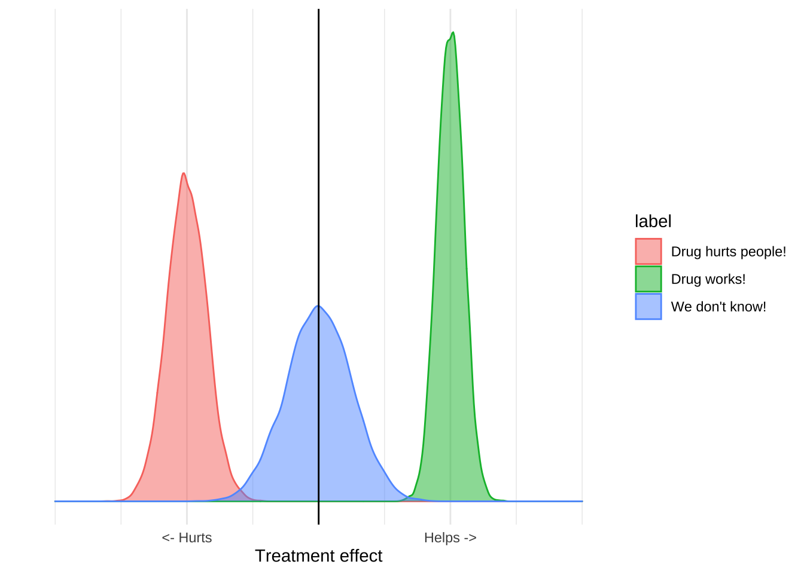
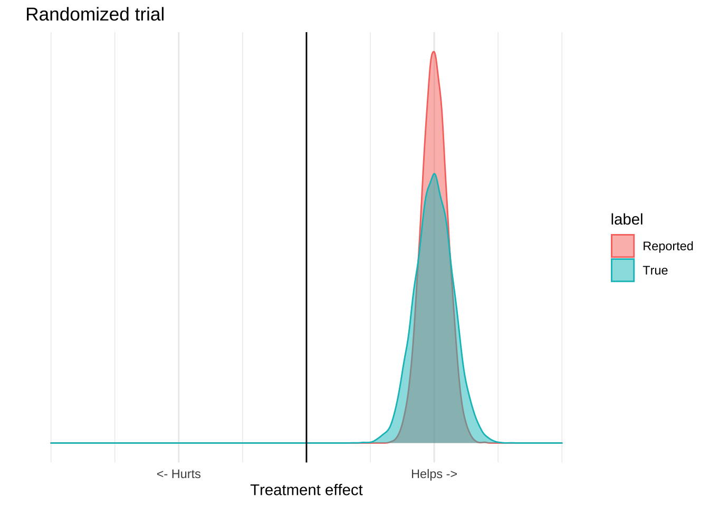
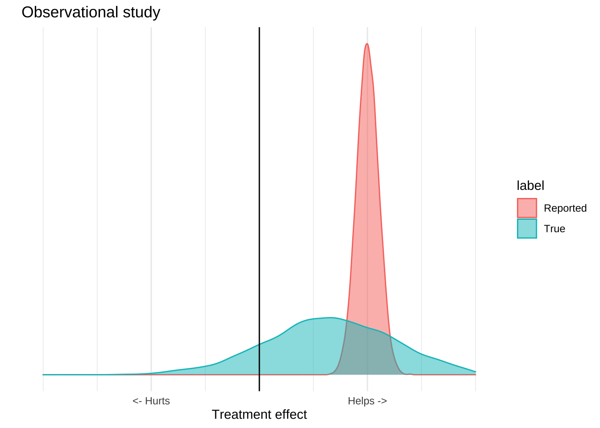
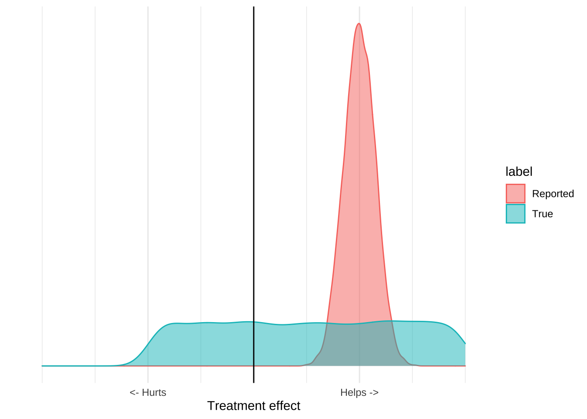
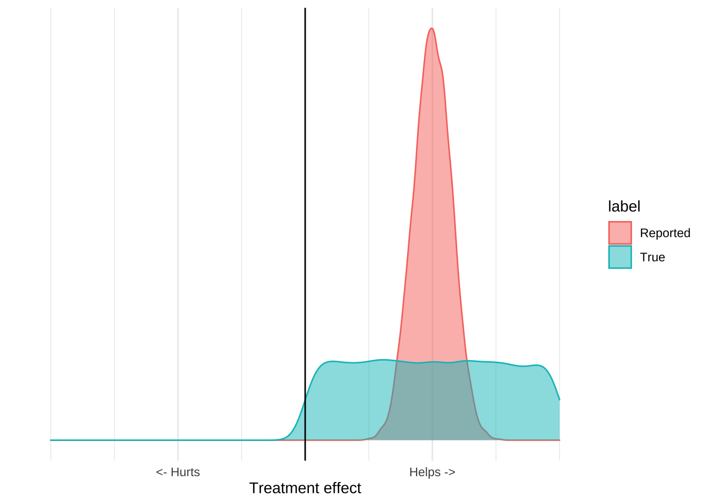

People often make a categorical distinction between randomized clinical trial data and other forms of data. Under this view the only information that can ground medical decision making is a large, multicenter, randomized clinical trial, and other study designs can only prove correlation, not causation. People who hold this view treat clinical trials as determinative of causation. Without a clinical trial you can’t make a causal claim, and once you have one, you no longer need to think that hard about causation.
What do we get from a clinical trial?
The purpose of clinical trials is to estimate the distribution of an outcome. You design and conduct an experiment, and based on the results and some statistical assumptions, you can estimate the range of outcomes that would be seen in the world. All the things we use to talk about clinical results – like confidence intervals, p-values, or statistical significance – are just ways of reporting this distribution, which we can visualize with a plot like this one:
These distributions have a mean, which is usually the estimated treatment effect, and standard deviation which tells you something about how certain you should be in the results. The reported distribution is, however, only half the story because it only accounts for quantifiable error.
All experimental data has two types of error, quantifiable error and unquantifiable, or irreducible error. Quantifiable error is basically the known unknowns of experimental data. For any dataset you have some estimate of how likely that data was to arise due to chance based on the variance of that data, and assumptions about the true distribution in the world. This lets researchers report a range of values which represent what you would expect to see if the trial were replicated many times.
However, quantifiable error is not the only, or most important, type of error.
There are often problems with trials which relate with the way the trial was designed, structured, or executed. For example there could be a systematic, unknown error with a particular test, or Excel could have turned a bunch of genetic codes into dates, or maybe the trial was just entirely fraudulent. All of these things are sources of uncertainty, and importantly, we cannot estimate them from a single dataset because those estimates will never include the risk that the data itself is flawed. The people who undertake the study will do their best to prevent these problems, but the risk of them is always there.
The result is that for any study we really have two distributions of effects, the reported distribution which includes just the quantifiable error, and the true distribution which includes the unquantifiable error as well.

What makes clinical trials special is that they are able to isolate a single mechanism from a broad range of confounders, and so the reported distribution is usually pretty close to the true one. Observational or ecological data can’t do this effectively, so the true distribution is usually much wider than the reported one. An observational study might report a highly significant result, but because there are lots of potential causal mechanisms which are not controlled for, it’s a poor estimate of what’s actually going on in the world. The result of these confounders is that the numbers reported by the study will usually be overly precise. The true distribution of effects is much larger than that reported by the study.

The important thing is that all evidence – whether it be experimental, observational, or ecological – has this problem. What generally makes randomized trials “good” and ecological trials “bad” is that for clinical trials the real distribution will be close to the reported distribution, while for ecological study it will be much wider. This is not a categorical distinction. There are well designed observational studies that provide an accurate representation of the world, and poorly executed clinical trials that do not. All of these trials have flaws, so you shouldn’t just believe any of them, and they all provide information, so you shouldn’t ignore them either.
Given that every study is an imperfect picture of the world, how can we make decisions based on them?
Replicate, triangulate
One of the most important things to look for when evaluating a trial is whether it’s been replicated. Replication makes it much more likely that a trial is a good picture of the world because most causes of irreducible error are eliminated if you have several different research groups produce the same result.
For example, it’s possible that one researcher fabricated data, but it’s vanishingly unlikely that several of them did so in the exact same way. As a result, if two, relatively independent, trials replicate the same results it is more likely that those results are real and not due to mistake or malfeasance.
Replication cannot, however, reveal systematic issues with the trial design, because those issues will be propagated to all the places where it was replicated. I’m going to illustrate this with my favourite example of whether vitamin D deficiency causes severe Covid-19 complications.
The first papers to suggest that vitamin D caused severe Covid were observational papers. The study design was to look at hospitalized patients and ask whether vitamin D levels were associated with Covid 19 progression, and they found that they were. Since then this result has been replicated in 18 other papers. This is great, but it doesn’t help our interpretation that much because these papers all share the same problems. Since these papers measured vitamin D levels after infection, we don’t know what caused what. It’s possible that vitamin D deficiency causes Covid, it’s possible that Covid causes vitamin D deficiency, and it’s also possible that some unknown factor causes both of them.
To put it visually, the data is equally consistent with the following three causal diagrams, and so replicating it doesn’t give us much information on what we should do.
Triangulation is basically the process of looking at a diverse set of study designs and asking what causal theory is consistent with all of them. The statistical insight here is the same as that underlying ensemble models and polling averages: If you have a bunch of diverse sources of evidence, their signal will be correlated but the error will be uncorrelated so if you take a global perspective on the data, the error and bias of the individual trials will tend to cancel each other out.
In addition to papers mentioned about there are also four observational studies which found an association between pre-infection blood samples and Covid-19, which makes the reverse causal model less likely. Since vitamin D levels measured before a person became sick are also correlated with Covid-19, it’s less likely that Covid was causing vitamin D deficiency.
We also have six studies, including two randomized clinical trials, which found that vitamin D supplementation improves disease progression in Covid positive patients. The two trials found that supplementation reduced ICU visits, and increased the proportion of mildly symptomatic people who were able to clear the virus.
Neither of these randomized trials are definitive, but they are enough to rule out the confounder model. The confounder model is the idea that the association between vitamin D deficiency in the observational studies was due to some unknown confoudner that was causing both vitamin D deficiency and Covid-19 severity. This may be something like spending less time outside, or having a condition which both reduces your vitamin D levels and also increases your Covid jeopardy. Randomization, even with small sample sizes, will control for these unknown confounding factors because they will be randomly distributed between the treatment and control arms. Additionally, the confounder model is inconsistent with the idea that Covid risk can be treated with vitamin D supplementation. If that model were true then these trials should either show no effect, or at least a fairly small effect, rather than the large ones that they did in fact report.
This approach also lets you incorporate evidence from contradictory trials without necessarily needing to discard the information provided by other studies. For example just last week there was a 240 person randomized controlled trial that found that a single high dose vitamin D supplement given 10 days after symptom onset did not improve the outcomes of severely ill Covid patients. If you were evaluating this using heuristics, you might just look at the sample size of this trial and declare it the winner because it’s larger than the other two trials. In other words, you would pick the strongest piece of evidence, believe it entirely, and discard any other pieces of evidence. This is a bad idea because the small trials, and the observational data all provide some information, and when making decisions we should try to avoid throwing information away. A better approach is to at least try to incorporate this evidence together and see if there’s a plausible causal story that fits all the data points. It’s unlikely that all but one of the studies are totally wrong, so if there’s a causal story which incorporates all of the evidence, that’s more appealing than a winner-take-all approach where the best study is believed completely while the others are discarded. In this case, one way of reconciling the large failed RCT with the small, successful ones is that vitamin D is not effective in severely ill patients during Covid’s inflammatory phase, but is effective during the pre-infection and viral replication phases.
Think about expected value
The second way to make good decisions based on bad data is to consider the expected value of a decision. Remember, what makes bad studies bad is that they don’t do a good job of estimating the real world value of an intervention, and so they can’t provide a precise estimate of what’s going to happen in the world. However, for many interventions we often don’t need a precise estimate to make a good treatment decision.
Consider the idea of wearing a cloth mask to prevent Covid-19 infection. The evidence in favour of this intervention is really bad. We have a few mechanistic studies which show that, in laboratory conditions, a cloth mask can reduce the transmission of viral particles, and we have severalf highly confounded ecological studies that show that places that have a mask mandate (as well as many other things) have a reduced Covid disease burden. There is also a recent randomized study of mask usage, which failed to show that giving people masks reduced their risk of contracting Covid-19. If we go back to our distribution plots, the mask evidence might like this; there’s some reported benefit but the available data really can’t provide that precise an estimate that masks work:

When you incorporate other information about the costs and benefits of mask usage, however, it becomes clear that the only good decision is to recommend masks. In particular, we have very good evidence that wearing a mask isn’t really harmful. Doctors, nurses, and dentists all wear masks all day, and do not suffer ill effects. Mask wearing is common in many Asian countries and there aren’t any reports of ill effects. While we’re not really sure about the upside of mask wearing, we can be very sure that there is no downside. Incorporating this information leads to a graph like this:

The important thing about this graph is that it allows us to make a decision based on the evidence even if we think that the evidence is terrible. While we can’t estimate precisely how much masks help, we can be pretty sure that they aren’t going to hurt us. The upside is some positive number, the downside is pretty much zero, and so the expected value of mask wearing will be positive. From the data we can’t tell how positive, but we really don’t need to know that, since Covid is extremely serious we should be taking every action that has a positive expected value, even if that value is pretty small. The poor quality ecological data and mechanistic studies reveal that it’s plausible that masks reduce Covid transmission, and that plausibility is all we should need to adopt the intervention.
Conclusion
We have no choice but to make decisions based on the data that’s in front of us. We’re lucky if we’re able to make those decisions based on several strong clinical trials, but more often than not the only information we have is based on small, biased, confounded studies. However, if we think through the totality of the evidence, as well as the expected value of our actions, we can usually make high quality, calculated decisions instead of waiting for more evidence.